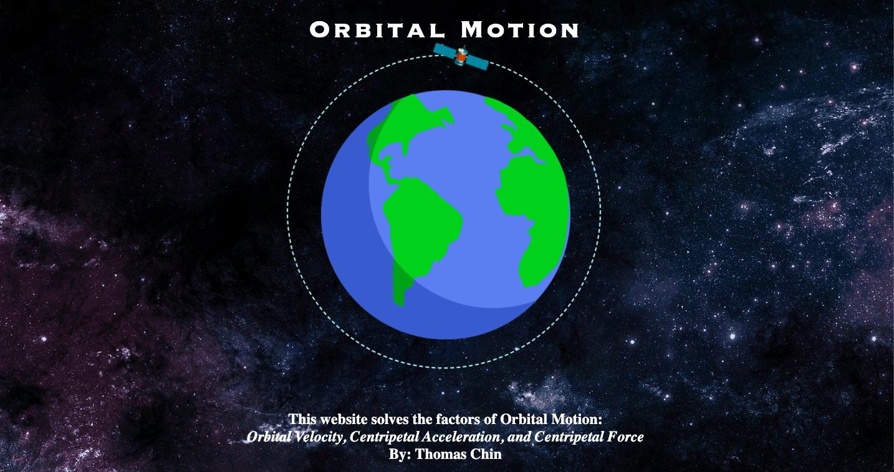
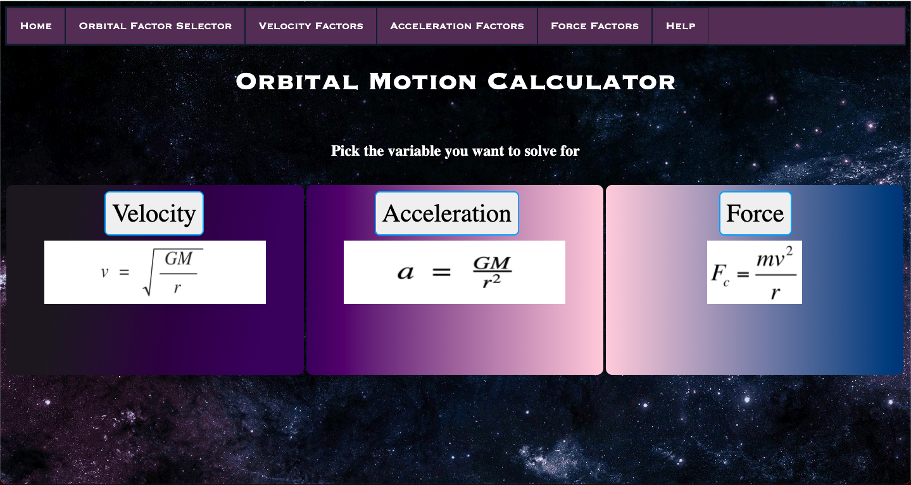
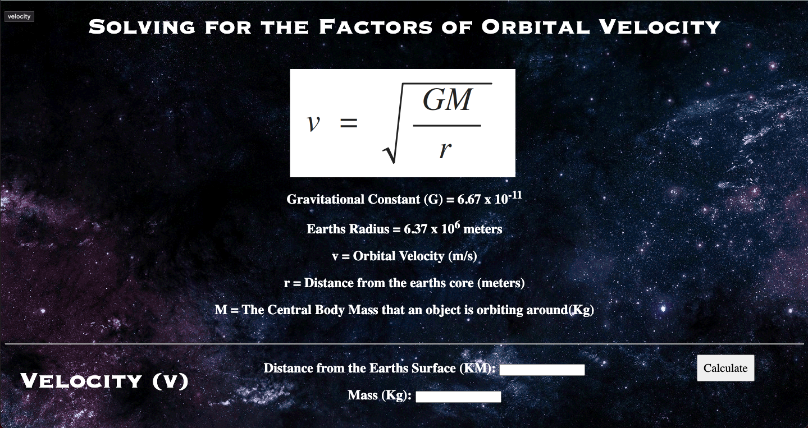
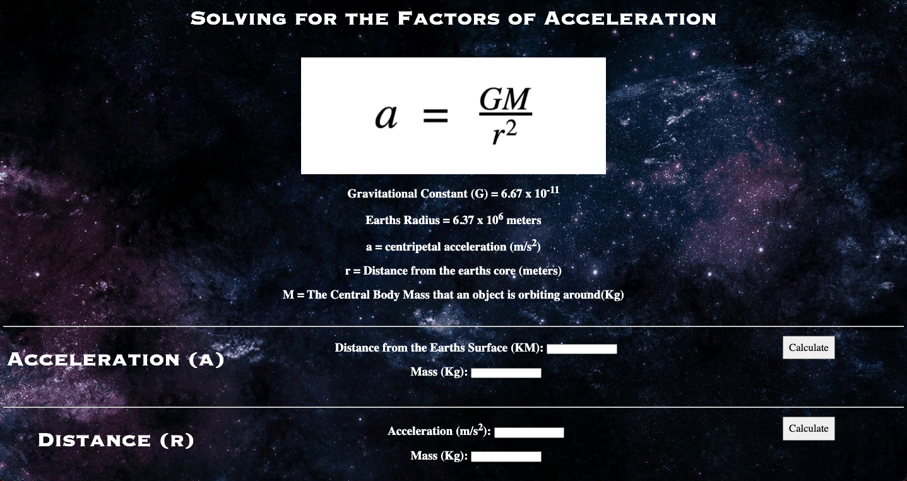
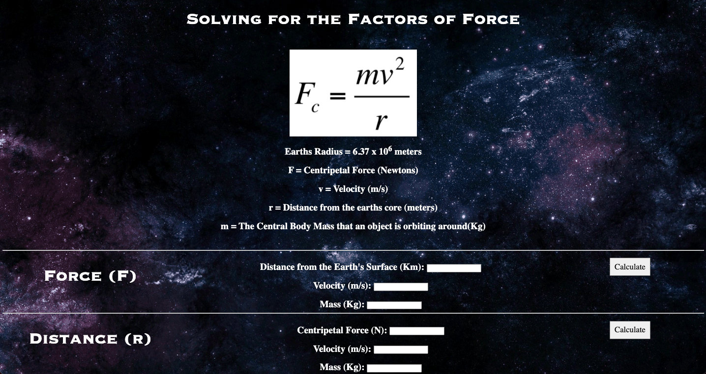

Menu Bar |
|
On the top of every page, there will be a menu bar to quickly navigate to the other
pages of the website. Simply click which page you want to visit. |
Home Page |
 |
This is the welcome page. To access any of the other pages, you can use
the menu bar at the top of the page. If you press the green go button,
you will go to the orbital factor selection page. |
Orbital Selector |
 |
In this page, you can select which factor of orbital motion you want to solve for
using the specific equations. Each button will take you to a different page to solve for each variable
in the equation. (mass, distance, velocity, force, etc. ) |
Velocity Page |
 |
Using the variables (mass, distance, velocity), you can calculate each variable of the orbital velocity equation. Mass is the central body mass that an object is orbiting around(Kg).
Distance is the distance from the earths core (meters). Make sure you enter in actual numbers and positive numbers for mass and distance. |
Acceleration Page |
 |
With the variables (mass, distance, acceleration), you can calculate each variable of the orbital acceleration equation.
Make sure you enter in actual numbers and positive numbers for mass and distance. |
Force Page |
 |
With the variables (mass, distance, force, velocity), you can calculate each variable of the centripetal force equation.
Make sure you enter in actual numbers and positive numbers for mass and distance. |